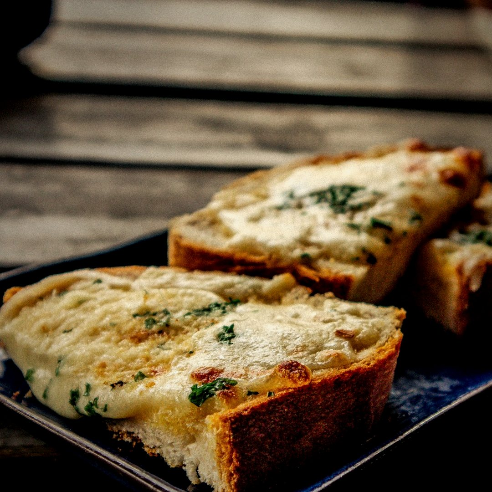
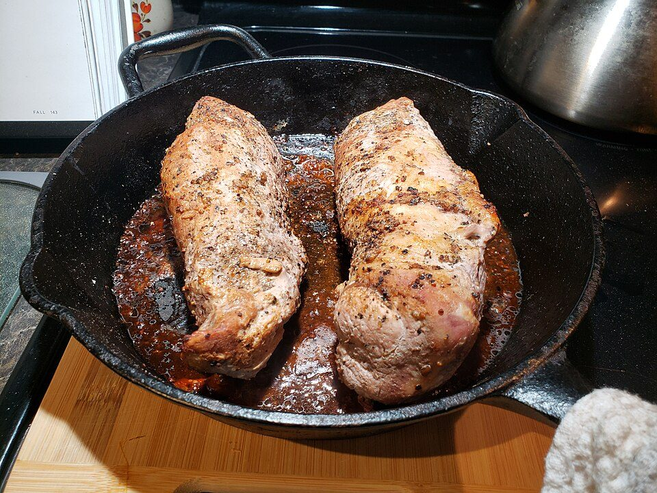
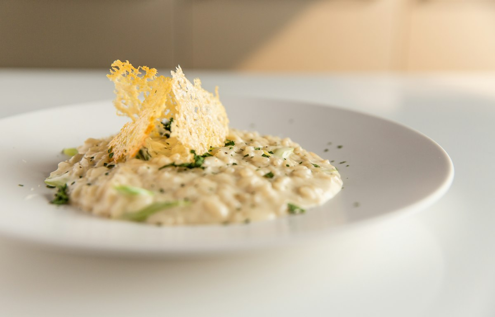
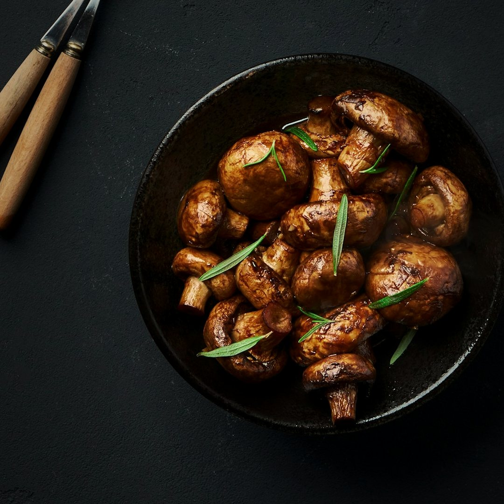
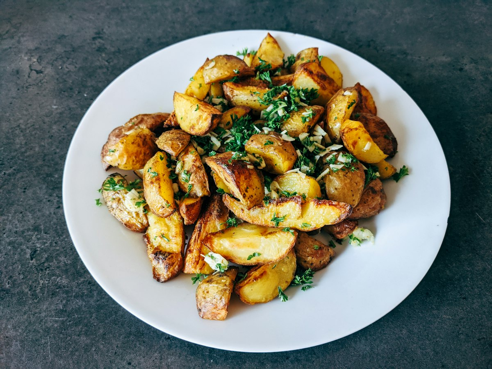
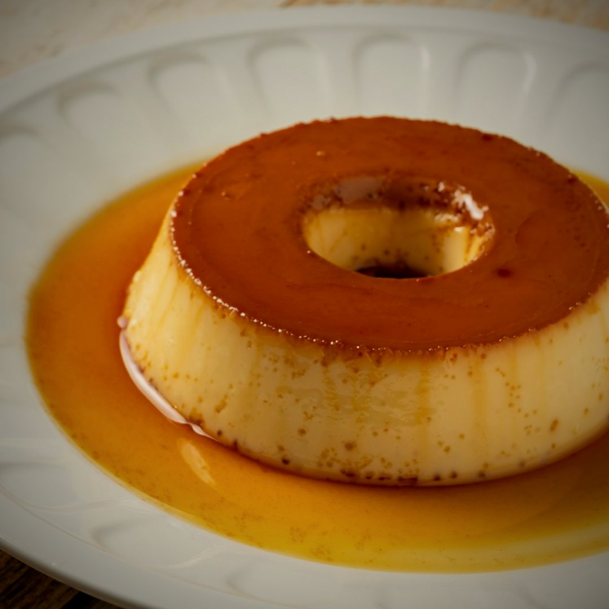

Restaurante
Imperial do Amor
Adriel & Louise
19 · 10 · 2026
Mesa reservada para Louise,
a convidada mais especial da noite.
Entrada

Bruschetta de Calabresa
Baguete artesanal tostada no azeite extravirgem, com calabresa dourada em cubinhos, muçarela derretida e orégano.
Prato principal

Lombo Suíno
Temperado e dourado na frigideira com manteiga e azeite, suculento por dentro e finalizado com salsinha fresca.
Servido com risoto de parmesão & Gouda
Acompanhamento

Risoto de Parmesão & Gouda
Arroz arbóreo cozido lentamente no caldo de legumes, finalizado com parmesão e Gouda. Cremoso e aveludado.
Guarnições

Cogumelos Paris
Dourados na manteiga e no azeite, com salsinha.

Batatas Rústicas
Douradas por fora, macias por dentro, com salsinha.
Sobremesa

Pudim de Leite
Liso e cremoso, com calda de caramelo dourada.
Fotos ilustrativas · Unsplash